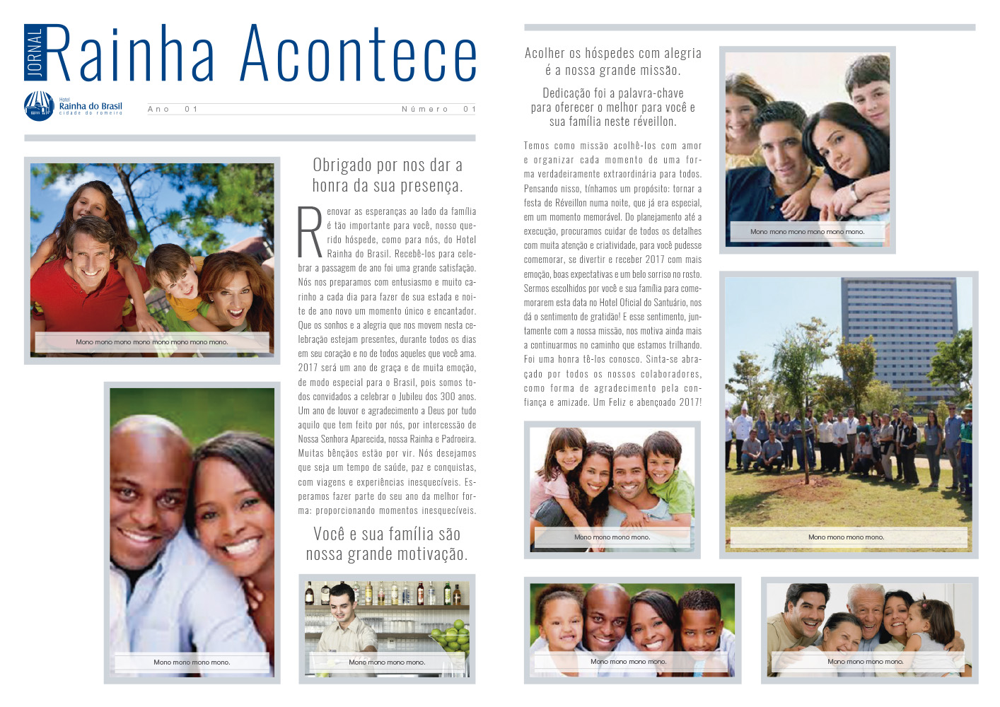

Hotel Rainha do Brasil é um hotel localizado na cidade de Aparecida-SP e para a virada do ano (2016/17) foi feita uma festa com o tema Filmes, e durante a festa os hóspedes iam sendo fotografados pelo fotógrafo do hotel, e para cada foto do hóspedes era feito um jornal personalizado com a foto da pessoa ou família com seu nome impresso.
Esse trabalho foi feito durante a festa e os cartazes deveriam estar prontos até a manhã, para quando o hóspede acordasse ja tivesse dísponivel o cartaz.
O meu trabalho foi personalizar e imprimir o cartaz.
Estudante do 5º semestre de Design de Games na Universidade Anhembi Morumbi, com conhecimento em Photoshop, Indesign, Illustrator, Unity, C#, JavaScript e HTML.
Experiência internacional na faculdade Missouri Valley College, inglês avançado.
Pró-ativo, responsável, em busca de novos desafios.